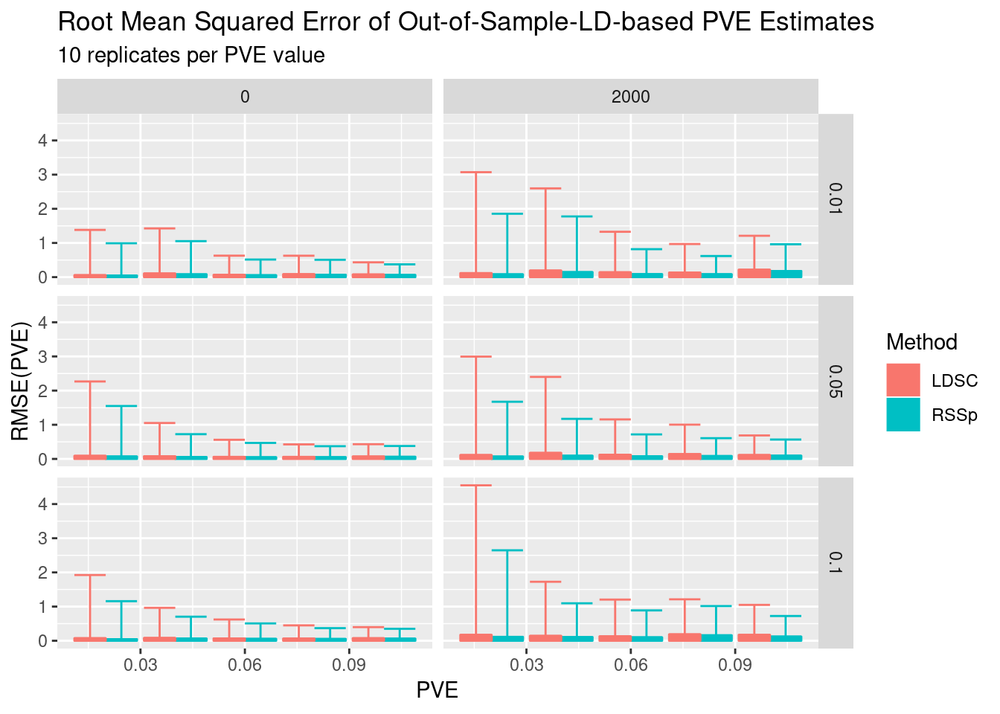

Last updated: 2018-07-11
workflowr checks: (Click a bullet for more information) ✔ R Markdown file: up-to-date
Great! Since the R Markdown file has been committed to the Git repository, you know the exact version of the code that produced these results.
✔ Environment: empty
Great job! The global environment was empty. Objects defined in the global environment can affect the analysis in your R Markdown file in unknown ways. For reproduciblity it’s best to always run the code in an empty environment.
✔ Seed:
set.seed(12345)
The command set.seed(12345) was run prior to running the code in the R Markdown file. Setting a seed ensures that any results that rely on randomness, e.g. subsampling or permutations, are reproducible.
✔ Session information: recorded
Great job! Recording the operating system, R version, and package versions is critical for reproducibility.
✔ Repository version: 5de0391
wflow_publish or wflow_git_commit). workflowr only checks the R Markdown file, but you know if there are other scripts or data files that it depends on. Below is the status of the Git repository when the results were generated:
Ignored files:
Ignored: .RData
Ignored: .Rhistory
Ignored: .Rproj.user/
Ignored: .httr-oauth
Ignored: analysis/PolygenicEstimation_cache/
Ignored: code/.Rhistory
Ignored: code/scripts/.Rhistory
Ignored: code/snakemake_files/.RData
Ignored: code/snakemake_files/.Rhistory
Ignored: code/snakemake_files/parameter_generation/
Ignored: code/snakemake_files/subset_data_pipeline/.RData
Ignored: data/rep_polygenic/
Untracked files:
Untracked: (dell-desktop's conflicted copy 2018-07-09).RData
Untracked: (dell-desktop's conflicted copy 2018-07-09).Rhistory
Untracked: _workflowr.yml
Untracked: analysis/#RSSp_WTCC_noConfounding.Rmd#
Untracked: analysis/AFvsp.Rmd
Untracked: analysis/DownSamplingResults.Rmd
Untracked: analysis/EVD_SVD.Rmd
Untracked: analysis/GRM_estimation.Rmd
Untracked: analysis/GenomeWideSimulation.Rmd
Untracked: analysis/Heritability.Rmd
Untracked: analysis/LDshrink_effect.Rmd
Untracked: analysis/MeetingSummary1.Rmd
Untracked: analysis/RSSR_PolygenicData.Rmd
Untracked: analysis/RSSp.stan
Untracked: analysis/RSSp2.stan
Untracked: analysis/RSSp_LDshrink.Rmd
Untracked: analysis/RSSp_Large_WTCC_noConfounding.Rmd
Untracked: analysis/RSSp_Largest_Simulation.Rmd
Untracked: analysis/RSSp_WTCC_noConfounding.Rmd
Untracked: analysis/RSSp_ldsc_highPVE_chr1.Rmd
Untracked: analysis/RSSp_ldsc_highPVE_hr.Rmd
Untracked: analysis/RSSp_ldsc_noConfounding.Rmd
Untracked: analysis/Running_ldetect.Rmd
Untracked: analysis/SPVE.Rmd
Untracked: analysis/Summary.Rmd
Untracked: analysis/Summary.org
Untracked: analysis/Vanilla_LDSC.Rmd
Untracked: analysis/chr_16.Rmd
Untracked: analysis/derby.log
Untracked: analysis/fquh_mod.RDS
Untracked: analysis/ltximg/
Untracked: analysis/nquh_mod.RDS
Untracked: analysis/out_res.RDS
Untracked: analysis/pvv_opt.Rmd
Untracked: analysis/quh_mod.RDS
Untracked: analysis/scz_data.org
Untracked: analysis/shrinkage_effect.Rmd
Untracked: code/#workflow_params.json#
Untracked: code/#workflow_params_rcc.json#
Untracked: code/RSSp_abstract.org
Untracked: code/RSSp_abstract_notes.org
Untracked: code/RSSp_talk_notes.org
Untracked: code/RSSp_talk_notes.pdf
Untracked: code/RSSp_talk_notes.tex
Untracked: code/Untitled.ipynb
Untracked: code/Untitled1.ipynb
Untracked: code/ideas.org
Untracked: code/ltximg/
Untracked: code/scripts/RSSp_ldsc_results.Rmd
Untracked: code/scripts/bin/
Untracked: code/scripts/ldsc_rssp.Rmd
Untracked: code/scripts/matlab2h5.py
Untracked: code/scripts/vcf-liftover.sh
Untracked: code/scripts/vcf2allel.py
Untracked: code/scripts/wright_eqtl_snplist.R
Untracked: code/snakemake_files/#LD_snakefile#
Untracked: code/snakemake_files/#crossover_snakefile#
Untracked: code/snakemake_files/#manip_snakefile#
Untracked: code/snakemake_files/.snakemake/
Untracked: code/snakemake_files/environment_rssp.yml
Untracked: code/snakemake_files/kg_snakefile~
Untracked: code/snakemake_files/ldsc/
Untracked: code/snakemake_files/plink.log
Untracked: code/snakemake_files/rssp_ldsc_report/
Untracked: code/snakemake_files/temp_map_19.RDS
Untracked: code/snakemake_files/temp_target_19.RDS
Untracked: code/workflow_params.json~
Untracked: data/NCBI34_to_GRCh38.chain.gz
Untracked: data/Snakemake_inputs/
Untracked: data/temp_ws.RData
Untracked: docs/#RSSp_WTCC_noConfounding.Rmd#
Untracked: docs/RSSp.stan
Untracked: docs/RSSp2.stan
Untracked: docs/Summary.org
Untracked: docs/derby.log
Untracked: docs/figure/LDshrink_effect.Rmd/
Untracked: docs/figure/RSSp_Large_WTCC_noConfounding.Rmd/
Untracked: docs/figure/RSSp_WTCC_noConfounding.Rmd/
Untracked: docs/figure/RSSp_ldsc_highPVE_chr1.Rmd/
Untracked: docs/figure/RSSp_ldsc_highPVE_hr.Rmd/
Untracked: docs/fquh_mod.RDS
Untracked: docs/log4j.spark.log
Untracked: docs/ltximg/
Untracked: docs/nquh_mod.RDS
Untracked: docs/quh_mod.RDS
Untracked: docs/scz_data.org
Untracked: dosage.scan.RData
Untracked: dosage.snp.RData
Untracked: output/RSSp_snakemake/
Unstaged changes:
Modified: analysis/DownsamplingResults2.Rmd
Modified: analysis/IndependenceCheck.Rmd
Modified: analysis/Meeting_Notes.Rmd
Modified: analysis/New_WholeGenome.Rmd
Modified: analysis/OutOfSampleLD.Rmd
Modified: analysis/PolygenicEstimation.Rmd
Modified: analysis/RSSP_standard_error.Rmd
Modified: analysis/RSSp_Chunksize_Investigation.Rmd
Modified: analysis/RSSp_Large_Simulation.Rmd
Modified: analysis/RSSp_Posterior.Rmd
Modified: analysis/RSSp_Prediction.Rmd
Modified: analysis/RSSp_ldsc.Rmd
Modified: analysis/RSSp_ldsc_gwas_direct_noConfounding.Rmd
Modified: analysis/RSSp_ldsc_highPVE.Rmd
Modified: analysis/SimulationPipeline.Rmd
Modified: analysis/_site.yml
Modified: analysis/about.Rmd
Modified: analysis/chr_2.Rmd
Deleted: analysis/chunks.R
Modified: analysis/index.Rmd
Modified: analysis/license.Rmd
Modified: analysis/lnzDist.Rmd
Modified: analysis/simulatingGWAS.Rmd
Modified: analysis/simulation.Rmd
Modified: code/TF_LDshrink.ipynb
Modified: code/scripts/pop_pull.R
Modified: code/scripts/popmap2RDS.R
Deleted: code/snakemake_files/EUR.samples
Modified: code/snakemake_files/LD_snakefile
Modified: code/snakemake_files/Snakefile
Modified: code/snakemake_files/envs/ldpred.yml
Modified: code/snakemake_files/genred_snakefile
Modified: code/snakemake_files/param_snakefile
Modified: code/snakemake_files/trait_snakefile
Modified: code/workflow_params.json
Modified: code/workflow_params_xps.json
| File | Version | Author | Date | Message |
|---|---|---|---|---|
| Rmd | 5de0391 | CreRecombinase | 2018-07-11 | wflow_publish(“analysis/OutOfSampleLD_smallPVE.Rmd”) |
For these simulations I’m using the wtccc cd genotypes for GWAS simulation and the bd genotypes as a reference panel for the purposes of calculating LD.

RSSp than LDSC?I also varied sample size. In the N=2000 scenario, both GWAS and reference panel genotypes were downsampled to 2000 individuals. In the N=4686 scenario, N reflects the size of the GWAS dataset, the reference panel dataset is 4806.
sessionInfo()R version 3.5.0 (2018-04-23)
Platform: x86_64-pc-linux-gnu (64-bit)
Running under: Manjaro Linux
Matrix products: default
BLAS/LAPACK: /opt/intel/compilers_and_libraries_2018.1.163/linux/mkl/lib/intel64_lin/libmkl_gf_lp64.so
locale:
[1] LC_CTYPE=en_US.UTF-8 LC_NUMERIC=C
[3] LC_TIME=en_US.UTF-8 LC_COLLATE=en_US.UTF-8
[5] LC_MONETARY=en_US.UTF-8 LC_MESSAGES=en_US.UTF-8
[7] LC_PAPER=en_US.UTF-8 LC_NAME=C
[9] LC_ADDRESS=C LC_TELEPHONE=C
[11] LC_MEASUREMENT=en_US.UTF-8 LC_IDENTIFICATION=C
attached base packages:
[1] stats graphics grDevices utils datasets methods base
other attached packages:
[1] bindrcpp_0.2.2 plotly_4.7.1 forcats_0.3.0
[4] stringr_1.3.1 dplyr_0.7.5 purrr_0.2.5
[7] readr_1.1.1 tidyr_0.8.1 tibble_1.4.2
[10] ggplot2_2.2.1.9000 tidyverse_1.2.1 EigenH5_1.1
loaded via a namespace (and not attached):
[1] httr_1.3.1 jsonlite_1.5 viridisLite_0.3.0
[4] R.utils_2.6.0 modelr_0.1.2 shiny_1.1.0
[7] assertthat_0.2.0 cellranger_1.1.0 yaml_2.1.19
[10] pillar_1.2.2 backports_1.1.2 lattice_0.20-35
[13] glue_1.2.0 RcppEigen_0.3.3.4.0 digest_0.6.15
[16] promises_1.0.1 rvest_0.3.2 colorspace_1.3-2
[19] htmltools_0.3.6 httpuv_1.4.3 Matrix_1.2-14
[22] R.oo_1.22.0 plyr_1.8.4 psych_1.8.4
[25] pkgconfig_2.0.1 broom_0.4.4 haven_1.1.1
[28] xtable_1.8-2 scales_0.5.0 whisker_0.3-2
[31] later_0.7.2 git2r_0.21.0 withr_2.1.2
[34] lazyeval_0.2.1 cli_1.0.0 mnormt_1.5-5
[37] mime_0.5 magrittr_1.5 crayon_1.3.4
[40] readxl_1.1.0 evaluate_0.10.1 R.methodsS3_1.7.1
[43] nlme_3.1-137 xml2_1.2.0 foreign_0.8-70
[46] tools_3.5.0 data.table_1.11.4 hms_0.4.2
[49] munsell_0.4.3 compiler_3.5.0 rlang_0.2.1
[52] grid_3.5.0 libblosc_1.12.1 rstudioapi_0.7
[55] htmlwidgets_1.2 crosstalk_1.0.0 labeling_0.3
[58] rmarkdown_1.9 gtable_0.2.0 reshape2_1.4.3
[61] R6_2.2.2 lubridate_1.7.4 knitr_1.20
[64] bindr_0.1.1 workflowr_1.0.1 rprojroot_1.3-2
[67] stringi_1.2.2 parallel_3.5.0 Rcpp_0.12.17
[70] tidyselect_0.2.4
This reproducible R Markdown analysis was created with workflowr 1.0.1